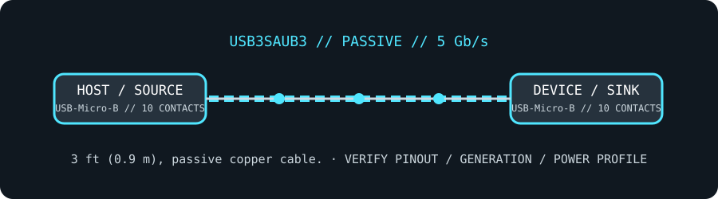

[ CABLE PRODUCT RECORD // STARTECH.COM USB3SAUB3 ]
StarTech USB3SAUB3 3 ft SuperSpeed USB 3.0 Type-A-to-Micro-B Cable
USB 3 Type-A-to-Micro-B; 3 ft; 5 Gb/s for matching Micro-B SuperSpeed devices. This record is SKU-specific; connector shape alone does not establish protocol or capability.

CLASSIFICATION: Data, peripheral, and high-speed cables. Verify exact SKU and the connected host/peripheral requirements.
SKU-specific interface and capability
| Exact product SKU | StarTech.com USB3SAUB3 |
|---|---|
| Generation and connector pinout | USB 3 Type-A male to USB 3 Micro-B male. The Micro-B SuperSpeed plug has the widened 10-contact form (USB 2.0 Micro-B five-contact section plus the SuperSpeed section); it is not the ordinary 5-contact Micro-B plug. Pinout summary: Type-A USB 3 contacts (VBUS, D−, D+, GND, SSTX±, SSRX±) to 10-contact USB 3 Micro-B; SuperSpeed lanes are additional to the USB 2.0 pair. |
| Length and construction | 3 ft (0.9 m), passive copper cable. |
| Signaling rate | USB 3.0 / USB 3.2 Gen 1 up to 5 Gb/s with compatible SuperSpeed host and Micro-B device; USB 2.0 fallback only when used with matching USB 2.0 Micro-B cabling/receptacle arrangements. |
| Power limits | For a standard configured USB 3.x downstream port, up to 5 V / 900 mA is the conventional port limit; the cable has no independent supply and does not advertise USB-PD or a higher current rating. |
| Compatibility limits | For legacy external HDDs and other peripherals specifically fitted with a USB 3 Micro-B receptacle. The widened plug will not mate with an ordinary USB 2.0 Micro-B port; never force it. Confirm the device receptacle shape before ordering. |
Compatibility & handling
- Identify both receptacle types, the exact SKU, protocol generation and direction before connecting; similar-looking USB connectors can carry different pinouts and capabilities.
- Maximum rate and power are ceilings, not guarantees: the full host/cable/peripheral chain must support and negotiate the same mode.
- Do not use the lead to defeat a port’s current limit, connect unlike power pinouts, or assume charging/video support from connector fit.
Sources & further reading
- StarTech.com — USB3SAUB3 official product listingManufacturer model identification, connector configuration and product-specific length/rating.
- StarTech.com — USB 3.0 cable products and connector familiesManufacturer cable-family reference for connector and generation selection.
- USB Implementers Forum — applicable USB specificationOfficial protocol-generation, signaling and connector/power rules; host/device implementation still controls actual operation.